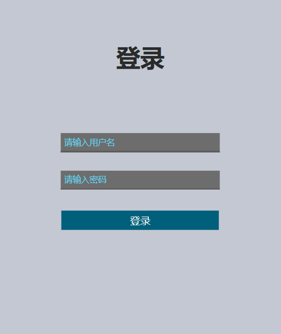

专注于提供景点便民设施定位服务，提高人民幸福生活指数
《国内旅游提升计划》中指出要提升旅游公共服务效能，坚持以改革创新成效激发国内旅游活力。 因此，旅游景点便民设施建设成为当今旅游业发展的重点方向之一。
采用以Transformer、Bert、ResNet-152为主干网络的RBTNET模型对旅游景点便民设施标注的多模态数据进行分析
以Web网页为载体，实现旅游景点便民设施冗余标记的数据检测以及旅游景点便民设施在地图上的标识。
将Transformer、Bert、ResNet-152结合形成一个RBTNET网络，对大量的旅游景点便民设施的标记数据进行冗余检测，提出一种可以适配旅游景点便民设施标记中的冗余数据的检测的方法。
使用具有不同模式的编码器进行特征提取，运用多模态的技术，整合了来自各种形式的数据，从而有助于产生更可靠的预测。
将旅游景点便民设施标注的问题与多模态技术相结合，尝试以不同的角度去解决旅游景点便民设施标注中存在的冗余数据的问题，通过人工智能技术构建一个旅游景点地图平台助力我国旅游景点环境的建设。